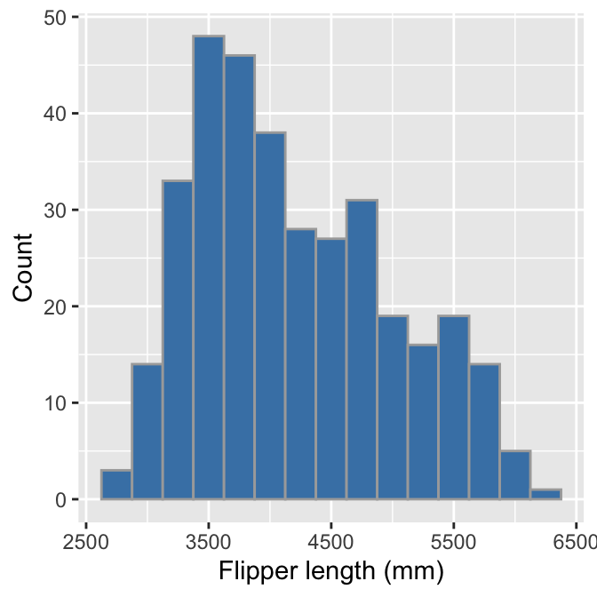
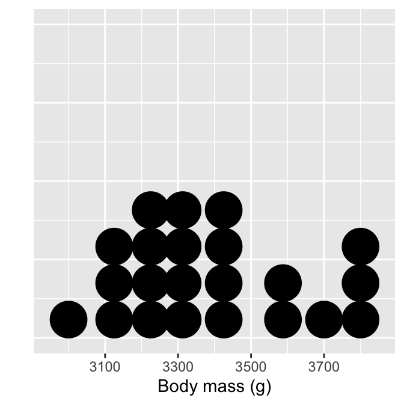

Chapter 16 Relationships between two variables
This chapter is about exploring the associations between pairs of variables in a sample. These are called bivariate associations. An association is any relationship between two variables that makes them dependent, i.e. knowing the value of one variable gives us some information about the possible values of the second variable. The main goal of this chapter is to show how to use descriptive statistics and visualisations to explore associations among different kinds of variables.
16.1 Associations between numeric variables
16.1.1 Descriptive statistics
Statisticians have devised various different ways to quantify an association between two numeric variables in a sample. The common measures seek to calculate some kind of correlation coefficient. The terms ‘association’ and ‘correlation’ are closely related; so much so that they are often used interchangeably. Strictly speaking correlation has a narrower definition: a correlation is defined by a metric (the ‘correlation coefficient’) that quantifies the degree to which an association tends to a certain pattern.
The most widely used measure of correlation is Pearson’s correlation coefficient (also called the Pearson product-moment correlation coefficient). Pearson’s correlation coefficient is something called the covariance of the two variables, divided by the product of their standard deviations. The mathematical formula for the Pearson’s correlation coefficient applied to a sample is: \[ r_{xy} = \frac{1}{N-1}\sum\limits_{i=1}^{N}{\frac{x_i-\bar{x}}{s_x} \frac{y_i-\bar{y}}{s_y}} \] We’re using \(x\) and \(y\) here to refer to each of the variables in the sample. The \(r_{xy}\) denotes the correlation coefficient, \(s_x\) and \(s_y\) denote the standard deviation of each sample, \(\bar{x}\) and \(\bar{y}\) are the sample means, and \(N\) is the sample size.
Remember, a correlation coefficient quantifies the degree to which an association tends to a certain pattern. In the case of Pearson’s correlation coefficient, the coefficient is designed to summarise the strength of a linear (i.e. ‘straight line’) association. We’ll return to this idea in a moment.
Pearson’s correlation coefficient takes a value of 0 if two variables are uncorrelated, and a value of +1 or -1 if they are perfectly related. ‘Perfectly related’ means we can predict the exact value of one variable given knowledge of the other. A positive value indicates that high values in one variable is associated with high values of the second. A negative value indicates that high values of one variable is associated with low values of the second. The words ‘high’ and ‘low’ are relative to the arithmetic mean.
In R we can use the cor function to calculate Pearson’s correlation coefficient. For example, the Pearson correlation coefficient between pressure and wind is given by:
cor(storms$wind, storms$pressure)## [1] -0.9254911This is negative, indicating wind speed tends to decline with increasing pressure. It is also quite close to -1, indicating that this association is very strong. We saw this in the Introduction to ggplot2 chapter when we plotted atmospheric pressure against wind speed.
The Pearson’s correlation coefficient must be interpreted with care. Two points are worth noting:
Because it is designed to summarise the strength of a linear relationship, Pearson’s correlation coefficient will be misleading when this relationship is curved, or even worse, hump-shaped.
Even if the relationship between two variables really is linear, Pearson’s correlation coefficient tells us nothing about the slope (i.e. the steepness) of the relationship.
If those last two statements don’t make immediate sense, take a close look at this figure:

This shows a variety of different relationships between pairs of numeric variables. The numbers in each subplot are the Pearson’s correlation coefficients associated with the pattern. Consider each row:
The first row shows a series of linear relationships that vary in their strength and direction. These are all linear in the sense that the general form of the relationship can be described by a straight line. This means that it is appropriate to use Pearson’s correlation coefficient in these cases to quantify the strength of association, i.e. the coefficient is a reliable measure of association.
The second row shows a series of linear relationships that vary in their direction, but are all examples of a perfect relationship—we can predict the exact value of one variable given knowledge of the other. What these plots show is that Pearson’s correlation coefficient measures the strength of association without telling us anything the steepness of the relationship.
The third row shows a series of different cases where it is definitely inappropriate to Pearson’s correlation coefficient. In each case, the variables are related to one another in some way, yet the correlation coefficient is always 0. Pearson’s correlation coefficient completely fails to flag the relationship because it is not even close to being linear.
16.1.1.1 Other measures of correlation
What should we do if we think the relationship between two variables is non-linear? We should not use Pearson correlation coefficient to measure association in this case. Instead, we can calculate something called a rank correlation. The idea is quite simple. Instead of working with the actual values of each variable we ‘rank’ them, i.e. we sort each variable from lowest to highest and the assign the labels ‘first, ’second,’ ‘third,’ etc. to different observations. Measures of rank correlation are based on a comparison of the resulting ranks. The two most popular are Spearman’s \(\rho\) (‘rho’) and Kendall’s \(\tau\) (‘tau’).
We won’t examine the mathematical formula for each of these as they don’t really help us understand them much. We do need to know how to interpret rank correlation coefficients though. The key point is that both coefficients behave in a very similar way to Pearson’s correlation coefficient. They take a value of 0 if the ranks are uncorrelated, and a value of +1 or -1 if they are perfectly related. Again, the sign tells us about the direction of the association.
We can calculate both rank correlation coefficients in R using the cor function again. This time we need to set the method argument to the appropriate value: method = "kendall" or method = "spearman". For example, the Spearman’s \(\rho\) and Kendall’s \(\tau\) measures of correlation between pressure and wind are given by:
cor(storms$wind, storms$pressure, method = "kendall")## [1] -0.7627645cor(storms$wind, storms$pressure, method = "spearman")## [1] -0.9025831These roughly agree with the Pearson correlation coefficient, though Kendall’s \(\tau\) seems to suggest that the relationship is weaker. Kendall’s \(\tau\) is often smaller than Spearman’s \(\rho\) correlation. Although Spearman’s \(\rho\) is used more widely, it is more sensitive to errors and discrepancies in the data than Kendall’s \(\tau\).
16.1.2 Graphical summaries
Correlation coefficients give us a simple way to summarise associations between numeric variables. They are limited though, because a single number can never summarise every aspect of the relationship between two variables. This is why we always visualise the relationship between two variables. The standard graph for displaying associations among numeric variables is a scatter plot, using horizontal and vertical axes to plot two variables as a series of points. We saw how to construct scatter plots using ggplot2 in the [Introduction to ggplot2] chapter so we won’t step through the details again.
There are a few other options beyond the standard scatter plot. Specifically, ggplot2 provides a couple of different geom_XX functions for producing a visual summary of relationships between numeric variables in situations where over-plotting of points is obscuring the relationship. One such example is the geom_count function:
ggplot(storms, aes(x = pressure, y = wind)) +
geom_count(alpha = 0.5)
The geom_count function is used to construct a layer in which data are first grouped into sets of identical observations. The number of cases in each group is counted, and this number (‘n’) is used to scale the size of points. Take note—it may be necessary to round numeric variables first (e.g. via mutate) to make a usable plot if they aren’t already discrete.
Two further options for dealing with excessive over-plotting are the geom_bin_2d and geom_hex functions. The the geom_bin_2d divides the plane into rectangles, counts the number of cases in each rectangle, and then uses the number of cases to assign the rectangle’s fill colour. The geom_hex function does essentially the same thing, but instead divides the plane into regular hexagons. Note that geom_hex relies on the hexbin package, so this need to be installed to use it. Here’s an example of geom_hex in action:
ggplot(storms, aes(x = pressure, y = wind)) +
geom_hex(bins = 25)
Notice that this looks exactly like the ggplot2 code for making a scatter plot, other than the fact that we’re now using geom_hex in place of geom_point.
16.2 Associations between categorical variables
16.2.1 Numerical summaries
Numerically exploring associations between pairs of categorical variables is not as simple as the numeric variable case. The general question we need to address is, “do different combinations of categories seem to be under or over represented?” We need to understand which combinations are common and which are rare. The simplest thing we can do is ‘cross-tabulate’ the number of occurrences of each combination. The resulting table is called a contingency table. The counts in the table are sometimes referred to as frequencies.
The xtabs function (= ‘cross-tabulation’) can do this for us. For example, the frequencies of each storm category and month combination is given by:
xtabs(~ type + month, data = storms)## month
## type 6 7 8 9 10 11 12
## Extratropical 27 38 23 149 129 42 4
## Hurricane 3 31 300 383 152 25 2
## Tropical Depression 22 59 150 156 84 42 0
## Tropical Storm 31 123 247 259 204 61 1The first argument sets the variables to cross-tabulate. The xtabs function uses R’s special formula language, so we can’t leave out that ~ at the beginning. After that, we just provide the list of variables to cross-tabulate, separated by the + sign. The second argument tells the function which data set to use. This isn’t a dplyr function, so the first argument is not the data for once.
What does this tell us? It shows us how many observations are associated with each combination of values of type and month. We have to stare at the numbers for a while, but eventually it should be apparent that hurricanes and tropical storms are more common in August and September (month ‘8’ and ‘9’). More severe storms occur in the middle of the storm season—perhaps not all that surprising.
If both variables are ordinal we can also calculate a descriptive statistic of association from a contingency table. It makes no sense to do this for nominal variables because their values are not ordered. Pearson’s correlation coefficient is not appropriate here. Instead, we have to use some kind of rank correlation coefficient that accounts for the categorical nature of the data. Spearman’s \(\rho\) and Kendall’s \(\tau\) are designed for numeric data, so they can’t be used either.
One measure of association that is appropriate for categorical data is Goodman and Kruskal’s \(\gamma\) (“gamma”). This behaves just like the other correlation coefficients we’ve looked at: it takes a value of 0 if the categories are uncorrelated, and a value of +1 or -1 if they are perfectly associated. The sign tells us about the direction of the association. Unfortunately, there isn’t a base R function to compute Goodman and Kruskal’s \(\gamma\), so we have to use a function from one of the packages that implements it (e.g. the GKgamma function in the vcdExtra package) if we need it.
16.2.2 Graphical summaries
Bar charts can be used to summarise the relationship between two categorical variables. The basic idea is to produce a separate bar for each combination of categories in the two variables. The lengths of these bars is proportional to the values they represent, which is either the raw counts or the proportions in each category combination. This is the same information displayed in a contingency table. Using ggplot2 to display this information is not very different from producing a bar graph to summarise a single categorical variable.
Let’s do this for the type and year variables in storms, breaking the process up into two steps. As always, we start by using the ggplot function to construct a graphical object containing the necessary default data and aesthetic mapping:
bar_plt <- ggplot(storms, aes(x = year, fill = type))Notice that we’ve included two aesthetic mappings. We mapped the year variable to the x axis, and the storm category (type) to the fill colour. We want to display information from two categorical variables, so we have to define two aesthetic mappings. The next step is to add a layer using geom_bar (we want a bar plot) and display the results:
bar_plt <- bar_plt + geom_bar()
bar_plt
This is called a stacked bar chart. Each year has its own bar (x = year), and each bar has been divided up into different coloured segments, the length of which is determined by the number of observations associated with each storm type in that year (fill = type).
We have all the right information in this graph, but it could be improved. Look at the labels on the x axis. Not every bar is labelled. This occurs because year is stored as a numeric vector in storms, yet we are treating it as a categorical variable in this analysis—ggplot2 has no way of knowing this of course. We need a new trick here. We need to convert year to something that won’t be interpreted as a number. One way to do this is to convert year to a character vector12. Once it’s in this format, ggplot2 will assume that year is a categorical variable.
We can convert a numeric vector to a character vector with the as.character function. We could transform year inside aes ‘on the fly,’ or alternatively, we can use the mutate function to construct a new version of storms containing the character version of year. We’ll do the latter so that we can keep reusing the new data frame:
storms_alter <- mutate(storms, year = as.character(year))We must load and attach dplyr to make this work. The new data frame storms_alter is identical to storms, except that year is now a character vector.
Now we just need to construct and display the ggplot2 object again using this new data frame:
ggplot(storms_alter, aes(x = year, fill = type)) +
geom_bar()
That’s an improvement. However, the ordering of the storm categories is not ideal because the order in which the different groups are presented does not reflect the ordinal scale we have in mind for storm category. We saw this same problem in the [Exploring categorical variables] chapter—ggplot2 treats does not ‘know’ the correct order of the type categories. Time for a new trick.
We need to somehow embed the information about the required category order of type into our data. It turns out that R has a special kind of augmented vector, called a factor, that’s designed to do just this. We make use of this we need to know how to convert something into a factor. We use the factor function, setting its levels argument to be a vector of category names in the correct order:
# 1. make a vector of storm type names in the required order
storm_names <- c("Tropical Depression", "Extratropical", "Tropical Storm", "Hurricane")
# 2. now convert year to a character and type to a factor
storms_alter <-
storms %>%
mutate(year = as.character(year),
type = factor(type, levels = storm_names)) This may look a little confusing at first glance, but all we did here was create a vector of ordered category names called storm_names, and then use mutate to change type to a factor using the ordering implied by storm_names. Just be careful with the spelling—the values in storm_names must match those in type. We did this with dplyr’s mutate function, again calling the modified data set storms_alter. Once we’ve applied the factor trick we can remake the bar chart:
# 3. make the bar plot
ggplot(storms_alter, aes(x = year, fill = type)) +
geom_bar() 
Factors
Factors are very useful. They crop up all the time in R. Unfortunately, they are also a pain to work with and a frequent source of errors. A complete treatment of factors would require a whole new chapter, so to save space, we’ve just shown one way to work with them via the factor function. This is enough to solve the reordering trick required to get ggplot2 to work the way we want it to, but there’s a lot more to learn about factors.
A stacked bar chart is the default produced by geom_bar. One problem with this kind of chart is that it can be hard to spot associations among the two categorical variables. If we want to know how they are associated it’s often better to plot the counts for each combination of categories side-by-side. This isn’t hard to do. We switch to a side-by-side bar chart by assigning a value of "dodge" to the position argument of geom_bar:
ggplot(storms_alter, aes(x = year, fill = type)) +
geom_bar(position = "dodge") +
labs(x = "Year",
y = "Number of Observations",
fill = "Storm Category")
The position = "dodge" argument says that we want the bars to ‘dodge’ one another along the x axis so that they are displayed next to one another. We snuck in one more tweak. Remember, we can use labs to set the labels of any aesthetic mapping we’ve defined—we used it here to set the label of the aesthetic mapping associated with the fill colour and the x/y axes.
This final figure shows that on average, storm systems spend more time as hurricanes and tropical storms than tropical depressions or extratropical systems. Other than that, the story is a little messy. For example, 1997 was an odd year, with few storm events and relatively few hurricanes.
16.3 Categorical-numerical associations
We’ve seen how to summarise the relationship between a pair of variables when they are of the same type: numeric vs. numeric or categorical vs. categorical. The obvious next question is, “How do we display the relationship between a categorical and numeric variable?” As usual, there are a range of different options.
16.3.1 Descriptive statistics
Numerical summaries can be constructed by taking the various ideas we’ve explored for numeric variables (means, medians, etc), and applying them to subsets of data defined by the values of the categorical variable. This is easy to do with the dplyr group_by and summarise pipeline. We won’t review it here though, because we’re going to do this in the next chapter.
16.3.2 Graphical summaries
The most common visualisation for exploring categorical-numerical relationships is the ‘box and whiskers plot’ (or just ‘box plot’). It’s easier to understand these plots once we’ve seen an example. To construct a box and whiskers plot we need to set ‘x’ and ‘y’ axis aesthetics for the categorical and numeric variable, and we use the geom_boxplot function to add the appropriate layer. Let’s examine the relationship between storm category and atmospheric pressure:
ggplot(storms_alter, aes(x = type, y = pressure)) +
geom_boxplot() +
xlab("Storm category") + ylab("Pressure (mbar)")
It’s fairly obvious why this is called a box and whiskers plot. Here’s a quick overview of the component parts of each box and whiskers:
The horizontal line inside the box is the sample median. This is our measure of central tendency. It allows us to compare the most likely value of the numeric variable across the different categories.
The boxes display the interquartile range (IQR) of the numeric variable in each category, i.e. the middle 50% of observations in each group according to their rank. This allows us to compare the spread of the numeric values in each category.
The vertical lines that extend above and below each box are the “whiskers.” The interpretation of these depends on which kind of box plot we are making. By default, ggplot2 produces a traditional Tukey box plot. Each whisker is drawn from each end of the box (the upper and lower quartiles) to a well-defined point. To find where the upper whisker ends we have to find the largest observation that is no more than 1.5 times the IQR away from the upper quartile. The lower whisker ends at the smallest observation that is no more than 1.5 times the IQR away from the lower quartile.
Any points that do not fall inside the whiskers are plotted as an individual point. These may be outliers, although they could also be perfectly consistent with the wider distribution.
The resulting plot compactly summarises the distribution of the numeric variable within each of the categories. We can see information about the central tendency, dispersion and skewness of each distribution. In addition, we can get a sense of whether there are potential outliers by noting the presence of individual points outside the whiskers.
What does the above plot tell us about atmospheric pressure and storm type? It shows that pressure tends to display negative skew in all four storm categories, though the skewness seems to be higher in tropical storms and hurricanes. The pressure values of tropical depression, tropical storm, and hurricane histograms overlap, though not by much. The extratropical storm system seems to be something ‘in between’ a tropical storm and a tropical depression.
16.3.3 Alternatives to box and whiskers plots
Box and whiskers plots are a good choice for exploring categorical-numerical relationships. They provide a lot of information about how the distribution of the numeric variable changes across categories. Sometimes we may want to squeeze even more information about these distributions into a plot. One way to do this is to make multiple histograms (or dot plots, if we don’t have much data).
We already know how to make a histogram, and we have seen how aesthetic properties such as colour and fill are used to distinguish different categories of a variable in a layer. This suggests that we can overlay more than one histogram on a single plot. Let’s use this idea to see how the sample distribution of wind speed (wind) differs among the storm classes:
ggplot(storms_alter, aes(x = wind, fill = type)) +
geom_histogram(position = "identity", alpha = 0.6, binwidth = 5) +
xlab("Wind Speed (mph)")
We define two mappings: the continuous variable (wind) is mapped to the x axis, and the categorical variable (type) is mapped to the the fill colour. Notice that we also set the position argument to "identity". This tells ggplot2 not to stack the histograms on top of one another. Instead, they are allowed to overlap. It’s for this reason that we also made them semi-transparent by setting the alpha argument.
Plotting several histograms in one layer like this places a lot of information in one plot, but it can be hard to make sense of this when the histograms overlap a lot. If the overlapping histograms are too difficult to interpret we might consider producing a separate one for each category. We’ve already seen a quick way to do this. Faceting works well here:
ggplot(storms_alter, aes(x = wind)) +
geom_histogram(alpha = 0.8, binwidth = 5) +
xlab("Wind Speed (mph)") +
facet_wrap(~ type, ncol = 4)
We can see quite a lot in this plot and the last. The tropical depression, tropical storm, and hurricane histograms do not overlap (with a few minor exceptions). These three storm categories are obviously defined with respect to wind speed. Perhaps they represent different phases of one underlying physical phenomenon? The extratropical storm system seems to be something altogether different. In fact, an extratropical storm is a different kind of weather system from the other three. It can turn into a tropical depression (winds < 39 mph) or a subtropical storm (winds > 39 mph), but only a subtropical can turn into a hurricane.
We’re oversimplifying, but the point is that the simple ordinal scale that we envisaged for the type variable is probably not very sensible. It’s not really true that an extratropical is “greater than” a subtropical depression (or vice versa). We should probably have characterised type as a nominal variable, although this designation ignores the fact that three of the storm types have a clear ordering. The take home message is that we have to understand our data before we start to really analyse it. This is why exploratory data analysis is so important.
16.4 Multivariate relationships
We examined various plots that summarise associations between two variables in the last chapter. How do we explore relationships between more than two variables in a single graph? That is, how do we explore multivariate associations? It’s difficult to give a concrete answer to this question, because it depends on the question we’re trying to address, the kinds of variables we’re working with, and to a large extent, our creativity and aptitude with an advanced graphing framework like ggplot2. Nonetheless, we already know enough about how ggplot2 works to build some fairly sophisticated visualisations. There are two ways to add additional information to a visualisation:
Define aesthetic mappings to allow the properties of a layer to depend on the different values of one or more variable.
Use faceting to construct a multipanel plot according to the values of categorical variables.
We can adopt both of these approaches at the same time, meaning we can get information form 4-6 variables into a single graph if we need to (though this does not always produce an easy-to-read plot). We’ve already seen these two approaches used together in the Introduction to ggplot2 chapter. We’ll look at one more example to illustrate the approach again.
We want to understand how the sample distribution of wind speed during a storm varies over the course of a year. We also want to visualise how this differs among storm categories. One way to do this is to produce a stacked histogram for each month of the year, where the colour of the stacked histograms changes with respect to storm category. We do this using the facet_wrap function to specify separate panels for each month, colouring the histograms by the type variable. Stacking the histograms happens by default:
ggplot(storms_alter, aes(x = wind, fill = type)) +
geom_histogram(binwidth = 15) +
xlab("Wind Speed (mph)") + ylab("Count") +
labs(fill = "Storm Type") +
facet_wrap(~ month, ncol = 3)
Notice that we’re using storms_alter from the last chapter, the version of storms where the type variable was converted to a factor. We haven’t used any new tricks here though. We just set a couple of aesthetics and used faceting to squeeze many histograms onto one plot. It mostly shows that if we’re planning a holiday in Central America we should probably avoid travelling from August to October…
The alternative is to convert it to something called a factor. A factor is a special type of vector used by R to encode categorical variables. These are very useful, but we don’t use them in this book because they can be a bit tricky to work with.↩︎